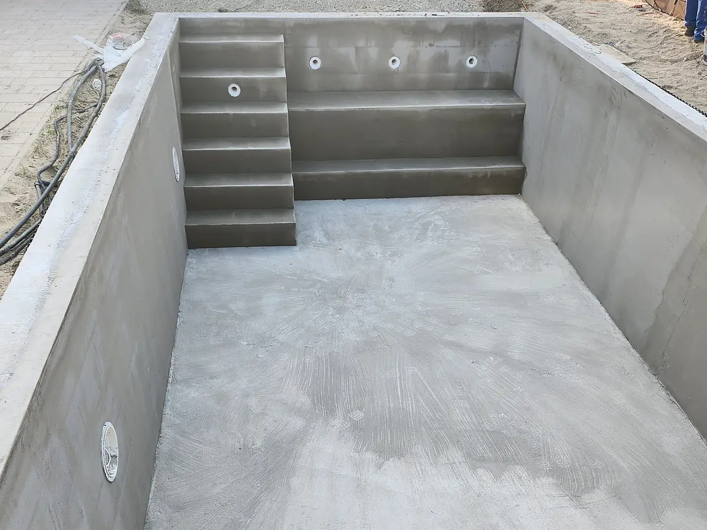

Az alapoktól
a kész otthonig.
Házak és lakások teljes kivitelezése és felújítása, medenceépítés, burkolás és kültéri munkák — Budapesten és Pest megyében.
- Teljes kivitelezés egy kézből
- Helyszíni felmérés a munka előtt
- Közvetlen kapcsolat Varga Gyulával
Minden, ami egy ház építéséhez vagy felújításához kell
A generálkivitelezés lényege, hogy önnel csak mi egyeztetünk — az anyagokkal, a szakemberekkel és az ütemezéssel mi foglalkozunk.
Teljes kivitelezés
Házak és lakások teljes építése, átalakítása és generálkivitelezése — a tervektől a kulcsátadásig. Önnek csak a döntések maradnak, a szervezés, a koordináció és a felügyelet a dolgunk.
Érdeklődjön telefononFelújítás
Külső és belső felújítások, lakások teljes átalakítása — egy szobától a teljes házig.
Érdeklődjön telefononMedenceépítés
Medencetest kialakítása az alapoktól, gépházépítés és fóliázás — egy kivitelezővel.
Érdeklődjön telefononKültéri munkák
Kerítésépítés, teraszépítés és támfalépítés — a kert és az épület összekötése.
Érdeklődjön telefononHomlokzat
Házak hőszigetelése és homlokzatszínezés — rendezett, egységes felülettel.
Érdeklődjön telefononElőtte. Utána. Közte a kivitelezés.
Húzza el a csúszkát a fotón: ezt az állapotot kaptuk — ezt adtuk át. Új párokkal folyamatosan bővül.
Medence az alapoktól a kész rendszerig.
Medencetest építése az alapozástól a gépház kialakításán át a fóliázásig — egy kivitelezővel, egy ütemezésben.
Medencetest kialakítása az alapoktól: földmunka, alapozás, szerkezetépítés.
Gépház kialakítása a medence teljes technikai rendszeréhez.
Medencefólia szerelése — a kész rendszer vízzáró rétege.

Így dolgozunk, nem csak így beszélünk.
Négy konkrét dolog, ami minden munkánál érvényes — kis feladatnál is, nem csak a nagy építkezéseknél.
Mit, miből, milyen sorrendben — az ajánlat ezekre a kérdésekre ad választ, tételesen. Ami nincs benne, arra rákérdezhet.
A heti munkarend előre egyeztetett. Ha valami mégis csúszik — az időjárás miatt például —, előre jelezzük, nem utólag.
A napi munka lezárásakor pakolt, biztonságos területet hagyunk magunk után — az ön otthona és a környezete is védve marad.
A kész munkát együtt nézzük végig, szobáról szobára. Ami nem jó, azt mi mondjuk ki először és javítjuk.
Négy lépés a kész munkáig
Így zajlik az együttműködés — az első hívástól az átadásig. Ugyanezt meséljük el szóban is, amikor felhív minket.
Kapcsolatfelvétel
Hívjon, és mondja el néhány mondatban a tervezett munkát — az első egyeztetés telefonon zajlik.
Igények és helyszín felmérése
Közösen átbeszéljük az igényeket, és felmérjük a helyszínt. Itt derül ki, mi reális, mivel kell számolni, és mi a következő lépés.
Kivitelezés
A munka egyeztetett ütemezésben zajlik. A folyamatról naprakész marad, a kérdéseire pedig mindig ugyanaz az ember válaszol.
Átadás
A kész munkát együtt nézzük át. A befejezés akkor van, ha minden részlet a helyén van.
Nem tudja még pontosan, mit szeretne? Ez se baj — az első beszélgetés pont erre megy ki: közösen kiderül, mi reális és mi éri meg.
Egy kapcsolattartó, egy felelős.
Házak és lakások teljes kivitelezésével, felújításával, medenceépítéssel és kültéri munkákkal foglalkozunk — Budapesten és Pest megyében. Az ajánlattól az átadásig ugyanaz az ember tartja a fonalat, aki a telefont is felveszi.
- Közvetlen kommunikáció — nem call center, nem ügyintézők láncolata.
- Teljes körű vállalás — a medencétől a homlokzatig egy kézből, egy ütemezésben.
- Nem csak az első benyomás számít — ugyanúgy rá akarunk majd mutatni ezekre a munkákra évek múlva is.
Varga Gyula
Az első beszélgetéstől az átadásig vele egyeztetheti a részleteket — telefonon, e-mailben vagy a helyszínen.
- Cég
- K.T BYGG HUNGARY KFT
- Kapcsolattartó
- Varga Gyula
- Régió
- Budapest és Pest megye
- Telefon
- +36 70 251 2561
- ktbygg.hungary@gmail.com
Amit a legtöbben megkérdeznek
Ami itt nincs a listában, azt hívásra is szívesen elmondjuk — nem lesz rosszabb dolga.
Melyik területen vállalnak munkát?
A fő működési területünk Budapest és Pest megye, de a szomszédos településeken is dolgozunk. Ha bizonytalan, hívjon — és együtt megnézzük, megoldható-e.
Hogyan zajlik az első beszélgetés?
Hívjon, és röviden elmondhatja a tervezett munkát. Ezután egyeztetünk egy helyszíni felmérést, és ennek alapján készítjük el az ajánlatot.
Vállalnak kisebb munkát is?
Igen — a burkolás, a kerítésépítés vagy egyéb kisebb feladatok önállóan is megrendelhetők, nem csak teljes kivitelezés részeként.
Mikor kezdődhet a munka?
Ez a munka jellegétől és az előkészülettől függ. Az ajánlatban közös naptárba tesszük a kezdést és az ütemezést.
Hívjon — a többit telefonon egyeztetjük.
Röviden mondja el, mit tervez — közösen kiderül, mi reális és mi éri meg. Az első beszélgetés nem kötelez semmire.
Telefonos egyeztetés — leggyorsabb+36 70 251 2561Koppintson a számra a híváshoz ktbygg.hungary@gmail.comRöviden elmondhatja a tervezett munkát, és egyeztetjük a következő lépést.
Közösen átbeszéljük az igényeket a helyszínen, és ennek alapján készül az ajánlat.
Mit, miből, milyen sorrendben — írásban, hogy minden kérdésre legyen válasz.